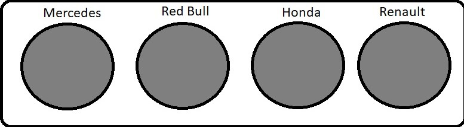

Los terminos que vamos a definir son: Graining, Paddock, Aquaplaning, Safety car, Drive through penalty, Down force y Undercut.
| Neumáticos | Imagen neumático | Cuando se utilizan |
| Blandos | Los neumáticos blandos se caracterizan por tener una mayor adherencia con el suelo, lo que significa, que la goma de la rueda se pega mejor a la carretera o asfalto y, por tanto, la maniobrabilidad del vehículo es mejor y más sencilla. | |
| Medios | Se trata de un compuesto versátil, pero que se sitúa en la parte más dura del espectro, por lo que se adapta a los circuitos que tienden a las altas velocidades, temperaturas y cargas de energía. | |
| Duros | Está diseñado para los circuitos que ponen la mayor carga de energía a través de los neumáticos, que por lo general son pistas que cuentan con curvas rápidas, superficies abrasivas, o altas temperaturas ambientales. | |
| Intermedios | Pueden utilizarse tanto en una pista húmeda sin agua estancada como en una superficie de secado. Este neumático evacua 30 litros de agua por segundo por neumático a 300 km/h. | |
| Lluvia | Estos neumáticos pueden evacuar 85 litros de agua por segundo por neumático a 300 km/h. Hay un nuevo perfil diseñado para aumentar la resistencia al aquaplaning, lo que dará al neumático más agarre en caso de lluvia intensa. El diámetro del neumático de mojado es 10 mm más ancho que el neumático liso. |
|

¡Pulsa en los circulos para acceder a las secciones! |